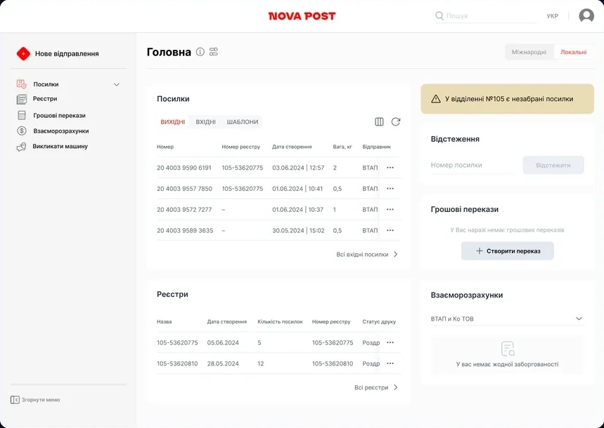
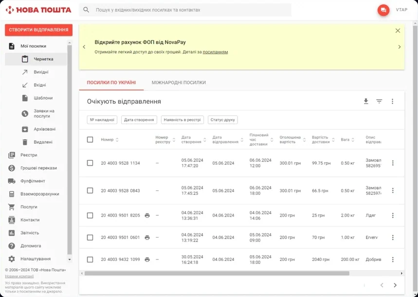
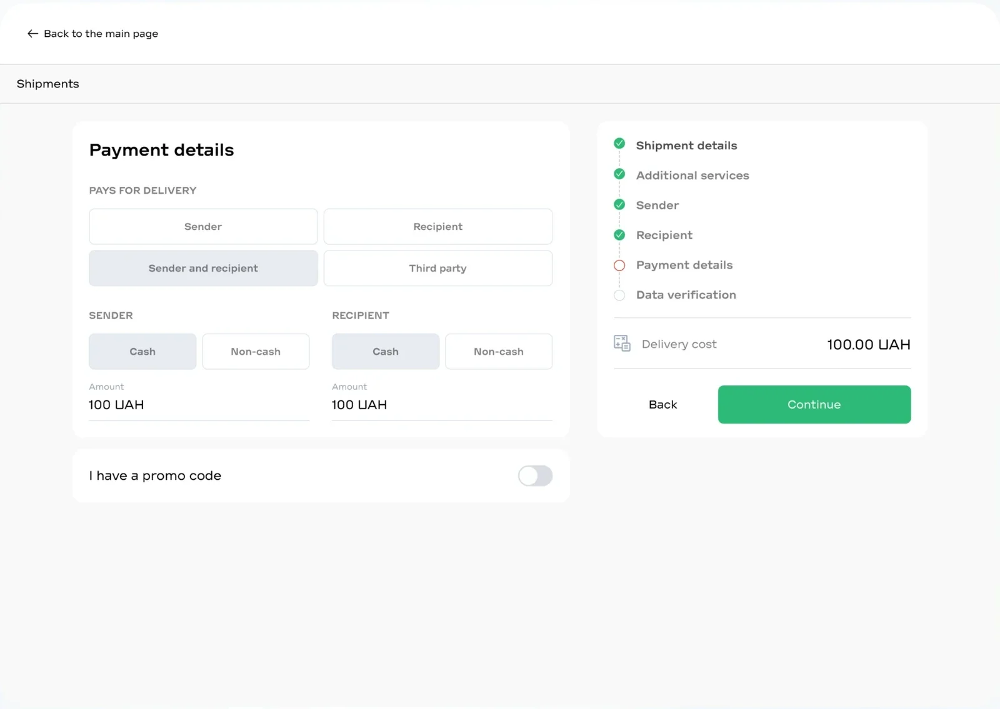
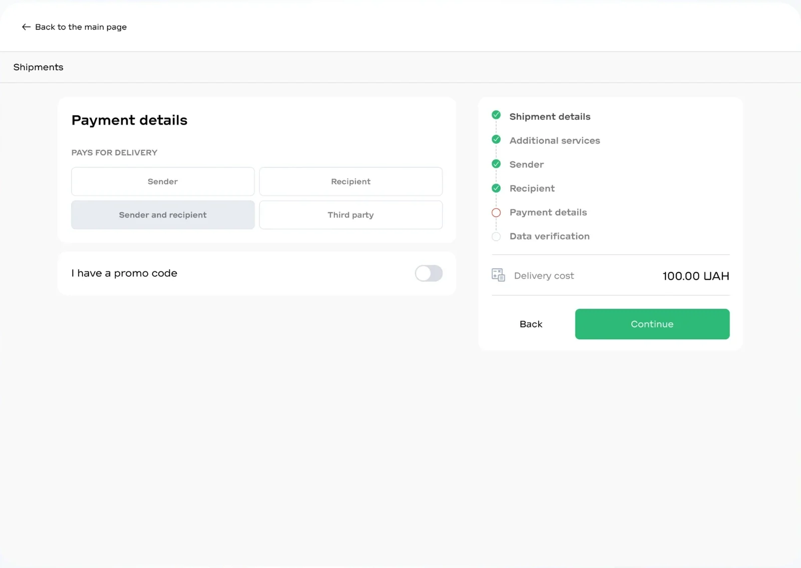
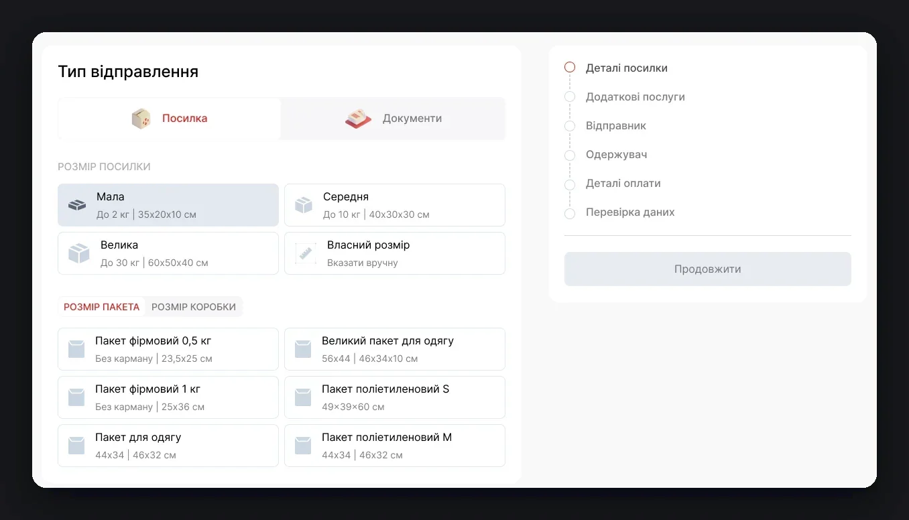
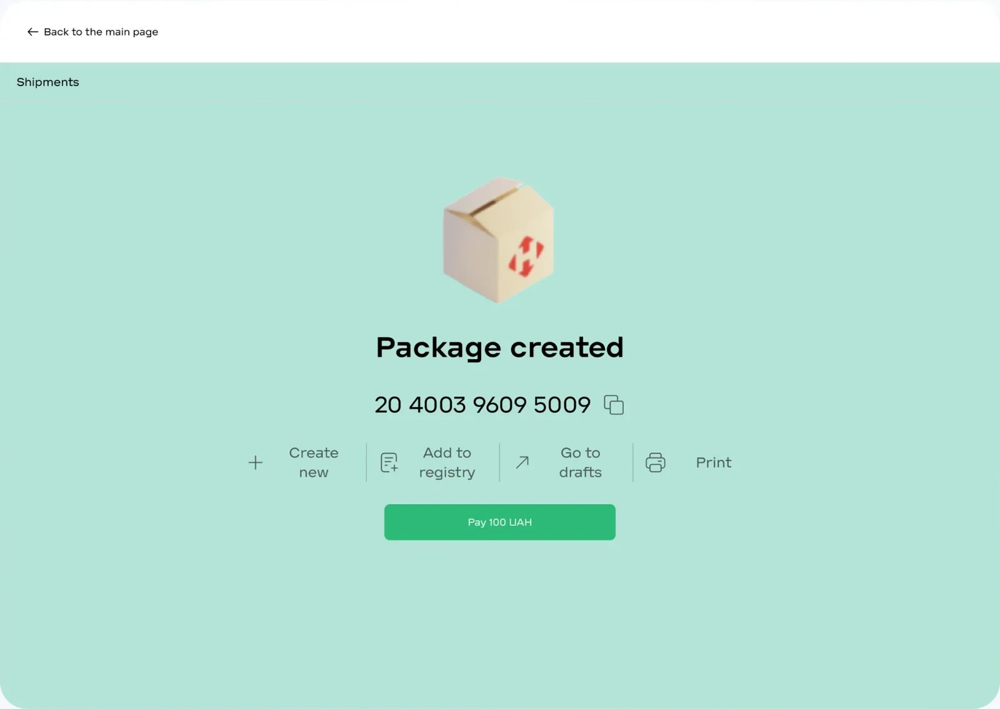
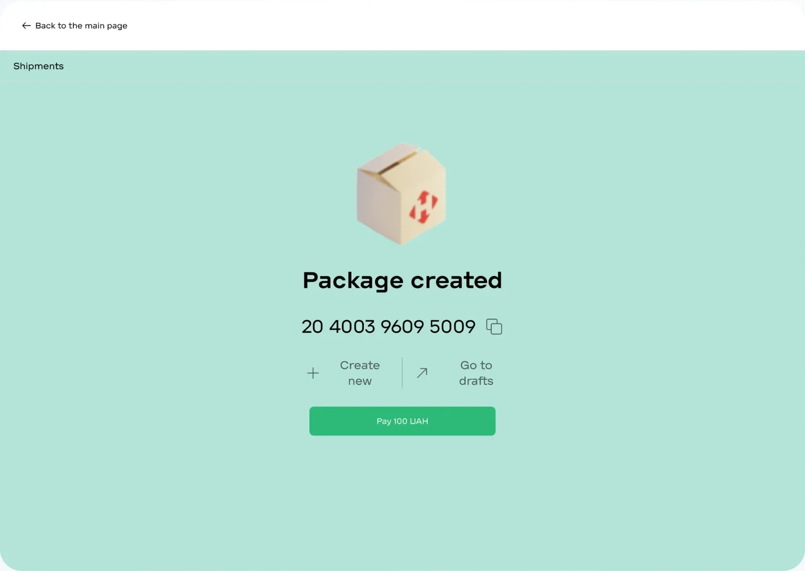
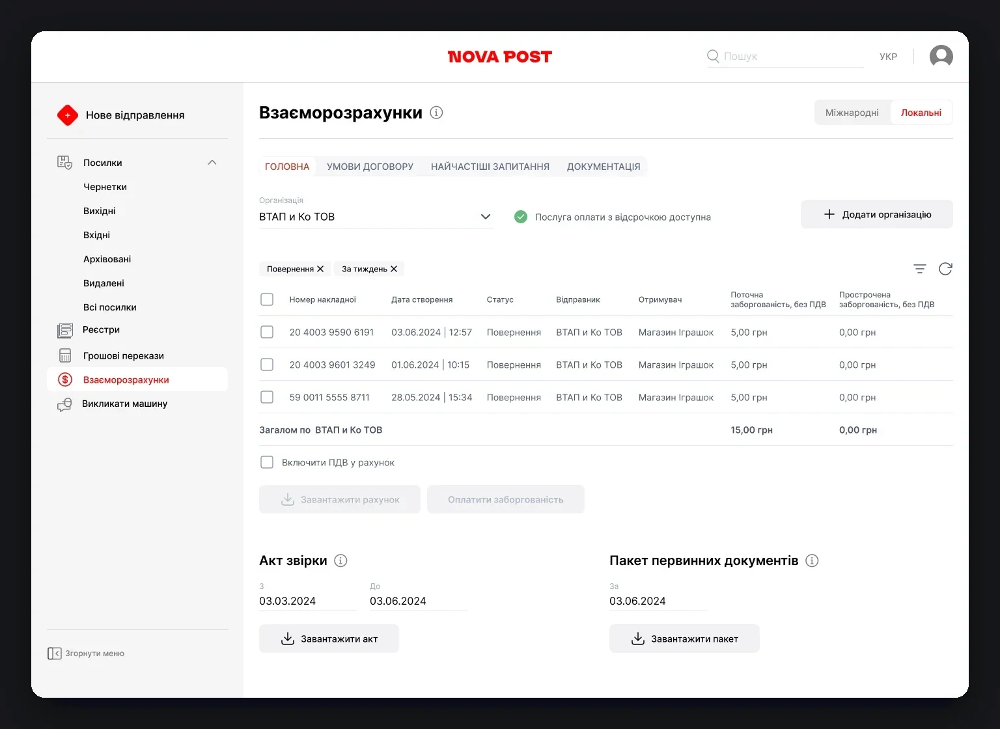

The account had two versions: the old one more capable, the new one more modern. There wasn’t enough user knowledge to decide what to move first.
Four weeks of Double Diamond: competitors, interviews, hypotheses and a quantitative survey, then a hi-fi prototype and testing. I led a team of 4 designers: I split the work, ran the in-depth interviews and user tests, and presented the results to the client. The decisions and the prototype were the team’s joint work.
What the research showed
An analysis of SAT, UPS and both account versions gave two ideas for the prototype – a dashboard and split payment. 6 interviews surfaced 20+ pain points, and the survey checked which mattered most.
19 questions and 29 hypotheses: the survey checked the pain points from the interviews so we could decide what to do first.
Want reminders about uncollected parcels
→ solution 01: dashboardWant to pick a bag or box instead of entering dimensions
→ solution 03Want to pay off debt in one click
→ solution 04Want to see a main dashboard on sign-in
The same number chose drafts – so we checked the dashboard in tests → decision 01Want to split payment between sender and recipient
→ solution 02Dashboard instead of drafts
- Why
- The old version opened on drafts, with parcels, registers, transfers and debts scattered across sections. 70% of respondents want reminders about uncollected parcels, 46.7% want a dashboard.
- What we did
- A dashboard as the main page – an idea from UPS: parcels, registers, tracking, transfers and settlements on one screen, with reminders about uncollected parcels on top.
- Result
- The account opens on what needs doing, not on a list of drafts.
How we testedThe dashboard was checked in the first test scenario with 5 users.


Old accountPrototypePayment can be split
- Why
- Businesses need to agree with clients on who pays for delivery, and the account didn’t allow splitting payment. 43.3% of respondents confirmed the need.
- What we did
- In the “Payment details” step the payer can be the sender, the recipient, both or a third party – an idea from SAT.
- Result
- We added a payment method choice for each payer.
Testing and follow-upTesting the first scenario showed the need to choose cash or card separately for each payer.


Before testingAfter testingBag or box instead of dimensions
- Why
- In interviews people complained about entering dimensions by hand. 56.7% of respondents want to pick a bag or box.
- What we did
- Standard sizes and branded bags or boxes to choose from, custom dimensions only when needed.
- Result
- We added “Add to register” and “Print” to the parcel-created screen.
Testing and follow-upTesting showed that next actions were missing after a parcel was created.



Before testingAfter testingCurrent debt and one-click payment
- Why
- Current debt was only visible on the 1st of the next month, and it couldn’t be paid with VAT in the account. 46.7% of respondents want one-click payment.
- What we did
- In “Settlements”, current and overdue debt is shown per waybill, the total is paid with one button, and VAT can be included in the invoice.
- Result
- Debt is visible at any time, not once a month.
How we testedThe debt payment scenario was checked in user testing.

What we recommended next
The survey confirmed some hypotheses that didn't make it into the prototype – we presented them separately, along with a list of old-version features worth moving first.